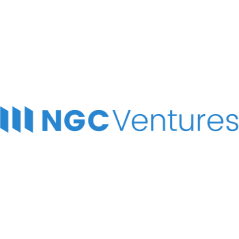
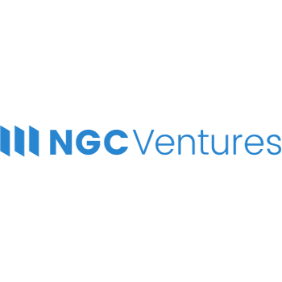

Paralink使命
当前的区块链应用服务场景十分有限，都被限制在同一个公链上。在无法访问真实世界数据的情况下，区块链无法用于预测市场、保险、诉讼、治理，也无法在其他需要依赖现实世界中的机构的场景下发挥作用。
这也被称为预言机问题，虽然已经有很多人尝试解决这个问题，但目前的解决方案过于昂贵和脆弱，无法实现大规模使用。

节点机制
数据的追溯是由Paralink链上节点通过Paralink查询语言（PQL）来完成。PQL允许人们查询SQL数据库，访问网络API，抓取网站以及访问其他区块链状态。通过PQL验证、聚合和插值采样规则，来合并不同来源的信息和数据，从而实现了更高的鲁棒性。PQL规则描述了要由Paralink的节点执行的去中心化数据共享的过程，并通过IPFS实现不可篡改地存储和访问。这种机制允许开发人员以无许可的方式添加自定义数据源和后期处理的规则。
基于 Polkadot.
有些数据需要更多的安全性。比如用于去中心化的衍生品市场和代币交易市场的实时喂价，价格反馈中的任何错误都会导致巨大的经济损失。在这种场景下，需要数量够多并且信誉良好的节点，并保持链上协调、验证和聚合机制。在以太坊主网上，由于低吞吐量和高gas成本，高频执行这种共识算法的成本非常昂贵。出于这个原因，Paralink链上共识算法选择使用波卡主网及其Substrate协议栈构建。


真正随机性
区块链基于块级共识算法是纯粹的确定性状态机。这意味着不可能将运气游戏的随机性在本地生成。出于这个原因，Paralink提供了一个基于加密签名的硬件熵生成器。并且每天提供公共熵。
用例
衍生品和加密货币市场
实时资产喂价
Paralink链上共识确保喂价的安全可靠
预测市场和保险
成果决议
支持官方和第三方来源导入链下现实世界数据
区块链游戏
熵的来源
Paralink的熵即服务提供了基于硬件的随机性
为什么选择paralink
Paralink为DeFi和其他区块链应用提供了一个跨链预言机平台。 Paralink Node 支持Ethereum和Plasm，并且即将会支持更多的网络。
需要极致安全性的应用可以使用Paralink链上共识算法，并且运行在Polkadot Substrate上。
通过使用PQL语言 和社区的PQL注册表查询，轻松访问现实世界数据。
Paralink熵即服务，提供了基于硬件的随机性.


不要错过Paralink
登记邮箱获取Paralink最新动态
路线图
研究
竞品分析
初步原型设计
拓展
发展核心团队
确定最终方案
生态支持
集成Polkadot SC平台
质押空投
中间层协议
在Rococo测试网发布平行链
PARA质押奖励
协议
Kusama测试网
在Kusama测试网发布平行链
可靠性监测
数据流可靠性监测器
中间层节点信誉跟踪
检测
Polkadot
Paralink在Polkadot主网发布平行链
Polkadot主网 <> Ethereum主网
Frequently
Asked Questions
任何人都可以运行Paralink节点，并作为DeFi智能合约的预言机。Paralink预言机是链上自治共识网络，适用于需要更高安全度的数据传输。中继者是一组被指定的节点验证者，由他们执行最终的验证，并通过/xcmp桥接轮换得出验证结果。中继者的节点验证由PARA令牌持有者管理。
信用良好的验证节点和链上的预言机高度依赖于数据的可靠性和准确性。Paralink网络是一个无许可的系统，因此市场的竞争将始终保持收入从表现不佳的预言机分配给有能力的预言机。为链上的聚合和验证又增加了一层安全性和数据完整性。
Polkadot的建立是为了连接私有链和联盟链、公共网络和无限网络、预言机以及尚未被创造的技术。Polkadot促进了一个互联网，在这个互联网中，独立的区块链可以通过Polkadot中继链以无需信任的方式交换信息和交易。Polkadot使创建开发、连接去中心化应用、服务和机构变得比以往任何时候都更容易。通过创新建立更好的解决方案，我们希望将社会从对一个破碎网络的依赖中解放出来，在这个网络中，我们的信任不会被任何大型机构所侵犯。。
我们选择Polkadot是由于它的基本设计原则，并且它是我们协议的最佳平台。同时跨链互操作性和可扩展性是使Paralink更加安全、可扩展和更经济的两个关键要素。
Paralink代币（PARA）是Paralink区块链上的激励和治理代币。PARA的持有者将可以通过质押他们的代币来获得治理权。其中，他们的主要职责将是通过持续投票来管理中继者的持节点人数。通过质押代币和履行社区治理职能的交换，他们将赚取质押的奖励。
是的，会有。除了Paralink区块链上的原生代币外，我们还将在TGE时推出Ethereum主网上的ERC-20代币。ERC-20代币非常适合与已经建立的DeFi生态系统进行相互操作，并且可以与Paralink链上的原生PARA代币进行1:1的。